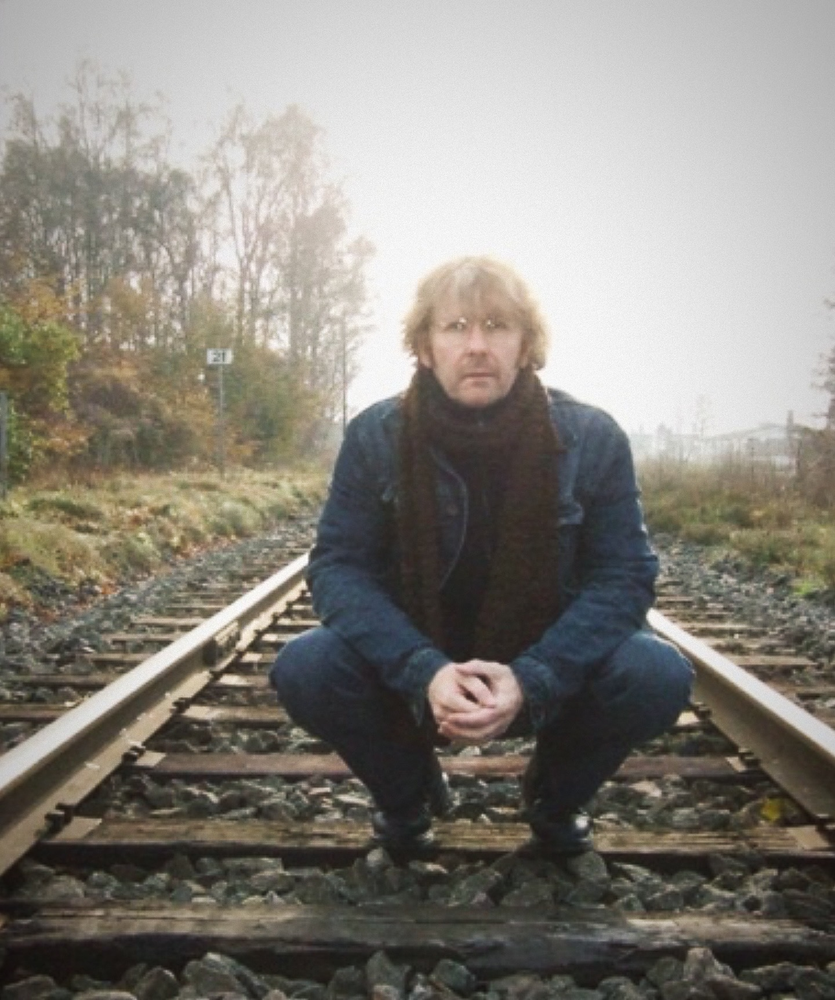

Peter Arnesson
Peter Arnesson, visual artist and musician, born on July 28, 1957, in Örkened in northeastern Skåne. He resides and works in Helsingborg. He was educated at Sundsgården Folk High School and Östra Grevie Art Line. After basic artistic education, he studied at the Graphic School Forum in Malmö under Bertil Lundberg from 1977 to 1982. He debuted in 1981 at Lilla Konstsalongen in Malmö.
He participated in the SYDNYTT exhibition at Malmö Konsthall in 1987. Peter Arnesson has had numerous solo exhibitions in Sweden and has received several working grants from the Swedish Arts Grants Committee and Visual Arts Copyright Society. He has also received cultural grants from Malmöhus County, Kristianstad County, and the city of Helsingborg. He participated in group exhibitions with the Ubbeboda collective from 1974 to 1978.
Today, Arnesson works as a visual artist, musician, and poet and is represented with around 80 works in public spaces according to the Visual Arts Copyright Society (Bildupphovsrätt).